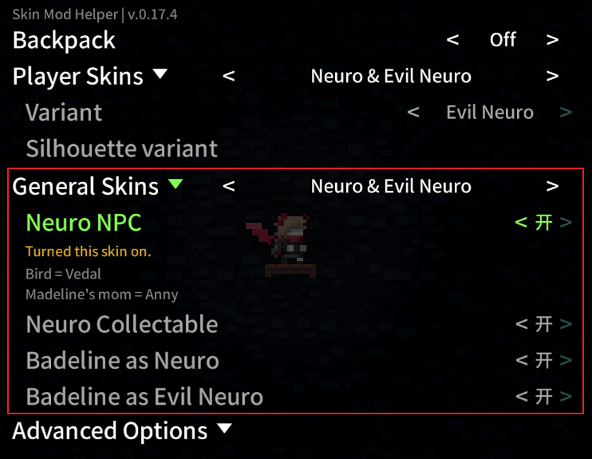

SkinModHelperConfig
SkinModHelperConfig.yaml
在你的皮肤 Mod 根目录放置 SkinModHelperConfig.yaml, 这是皮肤 Mod 的身份证(由于 SMH+ 兼容 SMH, 所以后续会将 SMH 的 SkinModHelperConfig.yaml 称为老配置)
因为 Neuro 皮肤是少有的一个皮肤 Mod 里有两种不同的角色皮肤(双胞胎姐妹🤤), 再加上人家比较 ... 再加上人家用到了很多 SMH+ 提供的新东西, 于是我就不得不使用 Neuro 皮肤作为示例讲解了, HEART🥰
注意
为了方便讲解, 我会为皮肤额外添加配置/贴图, 所以如果你顺着教程没找到对应的东西是正常的
| Neuro & Evil Neuro/SkinModHelperConfig.yaml | |
|---|---|
1 2 3 4 5 6 7 8 9 10 11 12 13 14 15 16 17 18 19 20 21 22 23 24 25 26 27 28 29 30 31 32 33 34 35 36 37 38 39 40 41 42 43 44 45 46 47 48 49 50 51 52 53 54 | |
| NeuroSkin/Dialog/English.txt | |
|---|---|
1 2 3 4 5 6 7 8 9 10 11 12 13 14 | |
在 SMH+ 中, 皮肤组成被分的更精细了, 以 Neuro 皮肤为例, 整体上来看, 一个皮肤 Mod 可以包含多个配置, 每个配置被分为了两种类型
- 皮肤类型
Player Skin: 对应主要皮肤选项, 可以改变玩家皮肤 - 通用类型
General Skin: 对应其他实体的皮肤, 如Booster,Bird,Strawberry等等
接下来逐一讲解单个配置中的不同属性
SkinName
这里你可以看作 (Player Skin + General Skin) 的 ID, 也就是当前配置的 ID, SMH+ 需要一个 ID 来存放你的皮肤信息(跟老配置中的 SkinId 有点不一样)
Mod
即皮肤分组, 一个皮肤 Mod 中可能包含多个皮肤配置, 有时我们需要将其中的一些归为一组, 比如这里的 Neuro & Evil Neuro(不填的话默认使用你 everest.yaml 里的 Mod 名)

这个 Mod 选项所填的内容本质上就是 Dialog Key, 如果你 Dialog 里有设置对应的 Dialog Key, 那么设置里就会显示对应的值, 否则只显示这个 key 的英文表示
1 2 3 4 5 6 7 | |
注意
其实我们完全可以一个配置做一个皮肤 Mod 的, 但是太散了不好管理, 不如都放一个皮肤 Mod 里做多个配置, 再用分组将它们组织起来
Character_ID
对应当前配置使用的人物动画对象 ID, 你需要将自定义的 Sprites.xml 放置在 {你的皮肤 Mod}/Graphics/ 文件夹中, 后续 SMH+ 会使用这个 ID 在这个 XML 中加载你的玩家皮肤
比如这里的 Neuro_Sama, Neuro_Sama_no_backpack, Evil_Neuro, Evil_Neuro_no_backpack, 都能在上面配置的 Character_ID 中找到(你会发现后 4 个配置没有 Character_ID,
那是因为他们不修改玩家的皮肤, 改的是其他实体的皮肤)
同时你也发现了, 这个时候我们的 Sprites.xml 跟官图的同路径不会有影响, 因为我们使用的名字是特殊的, 不太可能发生覆盖(如果你不知道这意味着什么,
请看这里)
| NeuroSkin/Graphics/Sprites.xml | |
|---|---|
1 2 3 4 5 6 7 8 9 10 11 12 13 14 | |
注意
人物皮肤的配置可以参考这些动画 ID: player, player_no_backpack, player_badeline, player_playback, 分别对应 Madeline/Madeline 无背包/Badeline(异变中的 另一个自己 选项)/教程残影
你可能需要替换别的 helper 提供的特定人物动画, 你可以在这里找到当前人物动画对象下包含的的更多的动画 ID, 又有皮肤可以画了(好耶!)
OtherSprite_Path
SMH+ 会通过 OtherSprite_Path 找到你的 XML 资源, 这里的 XML 主要存放除人物皮肤之外的人物相关的皮肤配置(比如 2a 最后电话亭的剧情中, 梦魇将 Madeline 吞噬, 但是这里的 Madeline 本身不是一个人物皮肤), 动画 ID 跟官图的一样即可
- 比如
Neuro_Skin/neuro路径指向了NeuroSkin/Graphics/Neuro_Skin/neuro/文件夹里的 XML
OtherSprite_ExPath
SMH+ 会通过 OtherSprite_ExPath 找到你的 XML 资源, 这里的 XML 主要存放实体相关的皮肤配置, 比如 strawberry(一般作为 General Skin 使用), 动画 ID 跟官图的一样即可
- 比如
Neuro_Skin/neuro_collectable路径指向了NeuroSkin/Graphics/Neuro_Skin/neuro_collectable/文件夹里的 XML
这样做的好处是你可以手动开启单个皮肤 Mod 中的一些预设或者组合不同皮肤 Mod 中的预设, 比如你可以选择让 bird 变成 Vedal, 金草莓变成 OneShot 中的灯泡

SkinDialogKey
皮肤名字对应的 Dialog Key, 对应 Player Skins -> Variant/Silhouette variant 中的皮肤名, 或者 General Skins 下的设置名
如果你在 key 后面添加 __Description 则可以为这个名字添加注释(注意, = 紧贴前面的单词才算一个 key, 不然不会被解析)
| NeuroSkin/Dialog/English.txt | |
|---|---|
1 2 3 4 | |
Player_List
是否将该配置视为人物皮肤配置并使其在 Player Skins -> Variant 中显示(默认为 False, 要显示的话别忘了填 Character_ID)
Silhouette_List
是否将该配置视为残影皮肤配置并使其在 Player Skins -> Silhouette variant 中显示(默认为 False, 要显示的话别忘了填 Character_ID)
General_List
是否将该配置视为通用皮肤配置并使其在 General Skins 中显示(默认为 "True", 前提是你已经写了 OtherSprite_ExPath)
hashSeed
为了在联机 Mod 中认出你的 Skin, 你需要一个独特的 ID(虽然你不填默认会使用你的 SkinName)
Backpack
如果你需要实现无背包版本的人物皮肤, 可以在 SkinName 后添加 _NB, 并作相应配置(之后玩家可以通过切换 Backpack 设置来更改)
Silhouette
你可以用和配置人物皮肤相同的方式配置残影皮肤(倒不如说残影本身就是一种人物皮肤), 这里用 Niko 皮肤举例
1 2 3 4 5 6 | |
| Niko Skin/Graphics/Sprites.xml | |
|---|---|
1 2 3 4 5 6 7 8 | |
总结
由于 SMH -> SMH+ 确实多了很多东西, 有些东西的组织也不太一样, 这里做个小总结让大家更好的理解(其实是因为我自己也研究的有点晕需要组织一下语言)
- 如果要做皮肤一定要有配置, 配置一定要有一个独特的 ID
SkinName - 如果写了很多配置, 想要给配置分个组, 请搭配
Mod食用 - 如果要翻译当前配置在设置中显示的名字, 请搭配
SkinDialogKey食用 - 如果要做人物的皮肤, 请搭配
Player_List和Character_ID食用- 如果人物皮肤要附带其他除人物皮肤之外的人物相关的皮肤 , 请搭配
OtherSprite_Path食用 - 如果人物皮肤要区分有/无背包的版本 , 请搭配
Backpack食用 - 如果人物皮肤要兼容联机 Mod , 请搭配
hashSeed食用
- 如果人物皮肤要附带其他除人物皮肤之外的人物相关的皮肤 , 请搭配
- 如果要做教程残影的皮肤, 请搭配
Silhouette_List和Character_ID食用, 可参考 niko 残影教程皮肤 - 如果要做其他实体的皮肤, 请搭配
General_List和OtherSprite_ExPath食用
注意
你也许需要重启章节/重启游戏来使一些设置/改变生效
Advanced Options
高级设置

Detailed & Precisely - skin choose
字面意思, 你可以在里面设置单个实体的皮肤, 而不局限于配置预设
Otherself Variant
默认情况, 当你开启异变中的另一个自己选项后, 游戏仍会使用当前选中的 SkinName 配置作为角色的皮肤, 所以如果你要单独设置另一个自己对应的皮肤, 你需要在高级设置中打开 Show Otherself Variant 选项, 然后你就可以在 Player Skins 中看到 Otherself Variant 选项了
比如这里我们就可以让 Neuro 作为 Madeline 的皮肤, 而 Evil Neuro 作为另一个自己(Badeline)的皮肤

Show where the player skin from
当 Player Skins 选项为 All 时, 是否显示你每个选中的皮肤来自于哪个皮肤分组

Better hair motion on grows
如果你的头发突然变长(比如我这里单冲到双冲头发长度从 6 -> 16), 按原版的代码来头发位置会突变, 你可以开启这个选项让头发位置平滑过渡